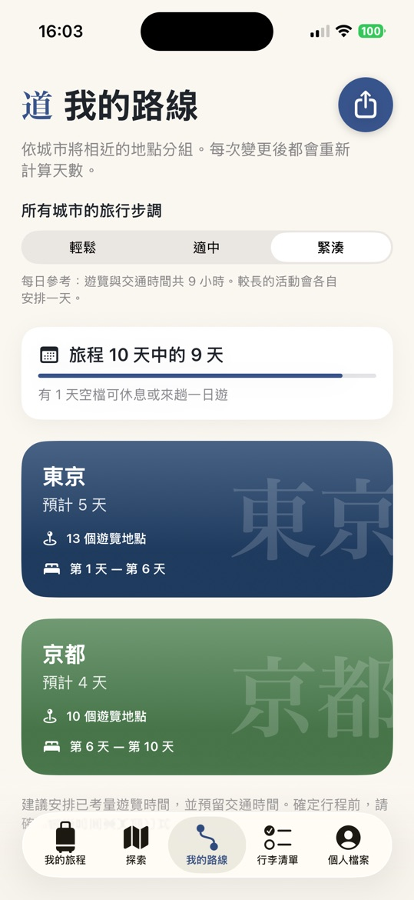
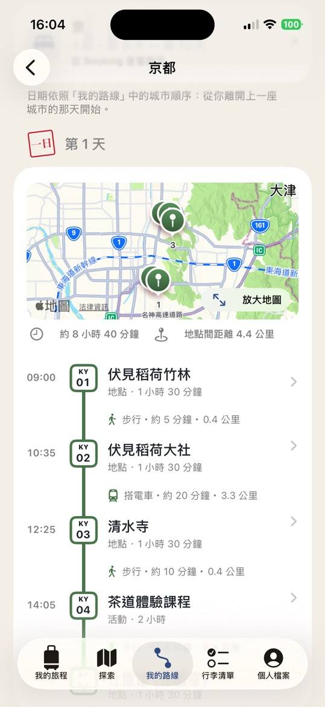

你的日本之旅，一次搞定。
挑選你想去的地方，App 就會算出每個城市需要待幾天，並為每一天排好路線，附上地圖以及步行或搭電車的時間。還有行李清單，讓你搭飛機前不會漏掉任何東西。
商店打不開嗎？點右上角的 ···，然後選擇「在瀏覽器中開啟」。
免費 · 免訂閱 · iPhone 和 Android

挑選你想去的地方，App 就會算出每個城市需要待幾天，並為每一天排好路線，附上地圖以及步行或搭電車的時間。還有行李清單，讓你搭飛機前不會漏掉任何東西。
商店打不開嗎？點右上角的 ···，然後選擇「在瀏覽器中開啟」。
免費 · 免訂閱 · iPhone 和 Android
